Hands-on Tutorial
This section assumes that you have already installed AFFDO on your system. If not follow the Installation Guide and install it first. Examples of AFFDO input files can be found at AFFDO_HOME/test and at this location. For this tutorial we will use a fragment of a small drug molecule. You can find its structure in AFFDO_HOME/test folder.
Go to AFFDO_HOME, launch the jupyter-notebook and open up main.ipynb as follows.
jupyter-notebook main.ipynb
Then, follow the steps below.
Step 1: To start a new project, run Cell 1.1. Enter the project name, charge of the ligand, and select the molecular structure. The structure must be in .mol format. Hit the OK button when you are ready. If you want to load an existing project, run Cell 1.2, select the project name from the dropdown menu and hit the OK button.
Let’s start Step 1 by running Cell 1.1.
Note
To execute each step in the AFFDO workflow, select the desired cell in the Jupyter Notebook by clicking on it, and then press the “Run” button located in the notebook’s toolbar.
This cell will open a window where you can enter the ‘Project name’ and ‘Ligand charge’ and upload the ‘ligand_name.mol’ file’s path. After entering this information, click ‘OK’.
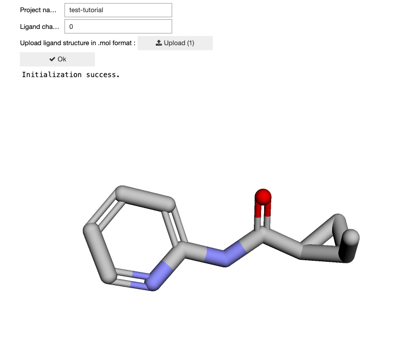
If you are loading an existing project, select and execute Cell 1.2. This will open a dropdown menu where you can choose the desired project from the displayed list.
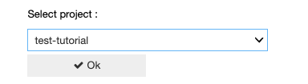
Step 2: Next, we will generate conformers of the ligand. Execute the Cell 2.1, when the execution is success, you can visualize the conformers by running Cell 2.2.
Proceed by running Cell 2.1, which uses the RDKit package to generate conformers. Upon completion of the conformer generation, the following message will be displayed:
Generated conformers using RDkit.
Now that the conformers have been generated, proceed to visualize them by running the Cell 2.2. You can view all the generated conformers by using the ‘Conf. Index’ slider.
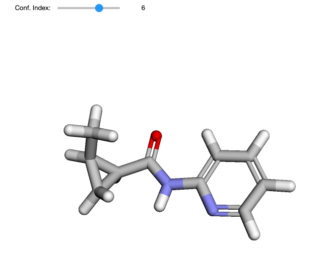Step 3: Minimize the conformers using a sufficiently accurate computational method by executing Cell 3.1. Currently this is performed using GFN2-XTB method. Run Cell 3.1 and hit Submit button to start running jobs. Hit Check button to check the job progress. Once all calculations are done, run Cell 3.2 to extract the minimum energies and geometries.* Upon completion, the following message will be displayed:
Copying files to local..
Extracted geometries and energies.
Step 4: Next, we cluster the minimized conformers and select the centroids of clusters. The idea is to find global minima and select representative structures for each minima. Execute Cell 4.1.* This action will open a window displaying various parameters pertaining to clustering statistics. As illustrated below, the test-ligand’s set of conformers are grouped into five clusters, and the centroid structures (representative structures) are identified. Proceed by running the next step.
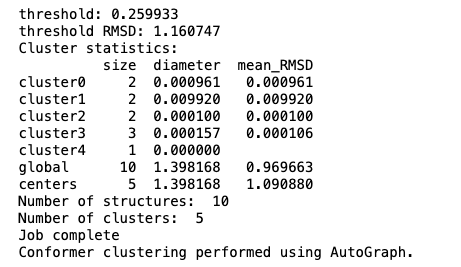
Step 5: Optimize the centroid structures using a more accurate computational method (PBE0-D3BJ). We will do this using a 5 step procedure. Execute Cells 5.1-5.5 sequentially. In Cell 5.2 and 5.4, use Submit button to start running jobs. Hit Check button check the job progress.
Step 6: Optimize the centroid molecular structures obtained from Step 5 using GAFF. The idea is to find out how well GAFF can describe your ligand. We do this by executing Cells 6.1-6.3.
Step 7: Upon completion of the centroid optimizations using DFT and MM, we next select significant minima. Start by executing Cell 7.1 which automatically does this. Then run Cell 7.2 to visualize and manually choose the representative conformers. This action will open a window with the global minimum already pre-selected in the Ref. ID panel (for instance, in our test-ligand example, it’s conformer 1).
You can then select all displayed conformers in the Conf. ID panel for comparison. At this stage, any conformer that exhibits an energy difference greater than 3.5 kcal/mol compared to the reference (the global minimum in the Ref. ID panel) should be discarded. Check the energy and root-mean-square (rms) values when selecting conformers.
Note
Some conformers may just be mirror images of each other, and it is sufficient to pick only one conformer from each pair. Inspect the conformers for highly similar features, such as rms values and energies. Visualize these conformers, and if you identify any as mirror images, you can simply select one from each pair for analysis.
After determining significant conformers, select them in the Conf. ID panel and then click the ‘Select Conformers’ button. For our example, we will proceed with conformers 1 and 3, as the others display larger energy differences. Upon selection, the following message will be displayed:
Saved selected conformers.
Step 8: Select the torsions that may connect minima we selected in the previous step. Run Cell 8.1 to automatically select torsions. You can visualize the selected torsions by running Cell 8.2. The torsions are represented by orange spheres on the molecular structure. During the torsion selection process, we make use of the longest non-hydrogen chain of the molecule to filter out redundant torsions. This chain is also shown in the visualizer (red spheres). If you are unsatisfied with selected torsions, run Cell 8.3 and manually select torsions. Run Cell 8.4 and Cell 8.5 to identify and visualize neighboring torsions. This is important if we want to carry out torsional scans while constraining neighboring torsions. Note that the visualizer won’t display neighboring torsions by default. In our test-ligand example with two conformers, three significant torsions are identified: [‘5-4-6-7’, ‘4-6-7-9’, ‘6-7-9-11’]. However, only one of them, [‘6-7-9-11’], connects our two minima. This selection criterion is based on torsion changes exceeding 30 degrees.
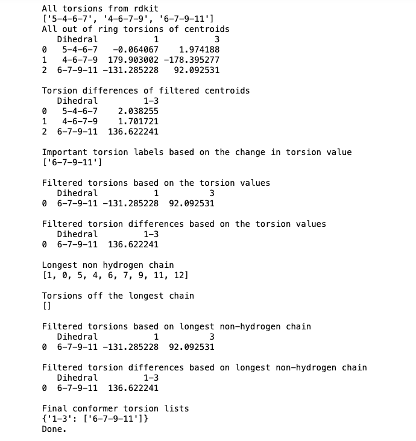Below is the visualization of the automatically selected torsion for our ligand.
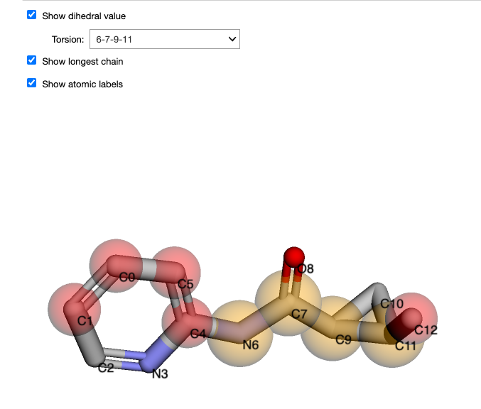From Cell 8.3 we will proceed with the previously identified significant torsion: [‘6-7-9-11’]. In the window that appears, select this torsion and then click the ‘Select dihedral’ button. Upon selection, the following message will be displayed:
Saved selected torsions.
The execution of Cell 8.4 and Cell 8.5 results in the following.
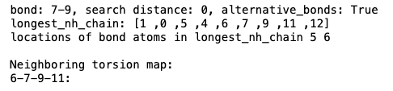Step 9: In this step, we will map the paths connecting minima using torsional scan calculations. Run Cell 9.1 to prepare input for torsional scans. Cell 9.2 executes the calculations. Use Submit button to start running jobs. Hit Check button to check the job progress. Please note this is a time consuming process. When the calculations are finished, run Cell 9.3 to extract data and Cell 9.4 to plot torsional scan energy profiles. We get the following torsion energy profiles for our test-ligand example. Note that the two profiles correspond to the same torsion starting from the two conformers. When you have multiple torsions use sliders, buttons and integer box to navigate between different torsion energy profiles.
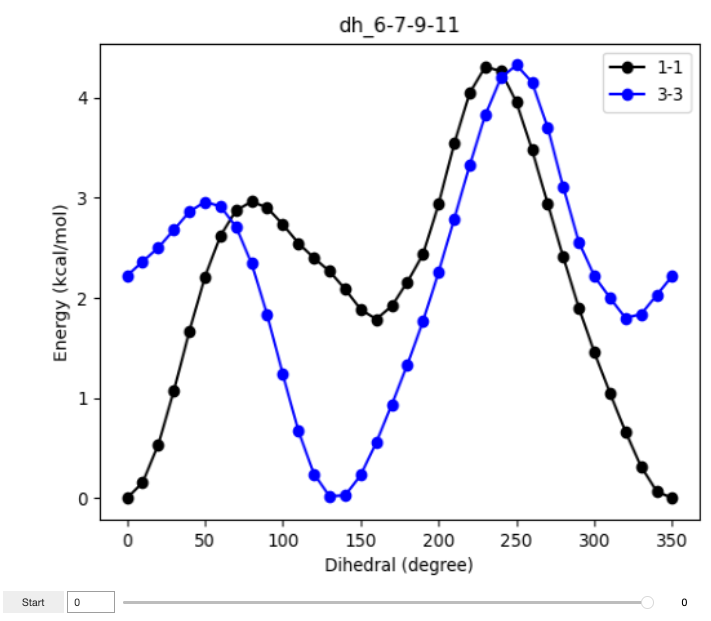Step 10: From the torsional scan energy plots above, identify starting conformers for each torsion. Run Cell 10.1 and save conformer-torsion pairs. If you cannot find any satisfactory starting conformer for a particular torsion, you should manually inspect the molecular structure using a molecular editing software (eg. Avogadro), modify it to minimize the structural clashes during torsional scan, and replace one of the existing conformers in: AFFDO_HOME/runs/PROJECT_DIR/results/centroid_optimization folder. Note that structure must be saved in both .xyz and .mdl formats. Then proceed with Cell 10.1, run Cell 10.2 to submit and check torsional scan calculations, and Cell 10.3 to extract data from output files. For our test-ligand example, either of the two conformers can be chosen as they demonstrate similar behaviors.
Note
If replacing conformers does not resolve energy jumps in the profile, it’s advisable to fragment the molecule and rerun the protocol for each fragment. When deciding how to fragment the molecule, we recommend maintaining the significant torsions identified earlier in the workflow within each new structure. This approach keeps the fragments closely representative of the original ligand while minimizing other interactions that could affect the energy profile beyond the torsion itself.
Execute Cell 10.2 to normalize each torsion-conformer pair. This step is designed to attenuate any significant energy jumps in the energy profile. Following this, run Cell 10.3 to extract the normalized data. After the extraction, visualize the plot to review the results.
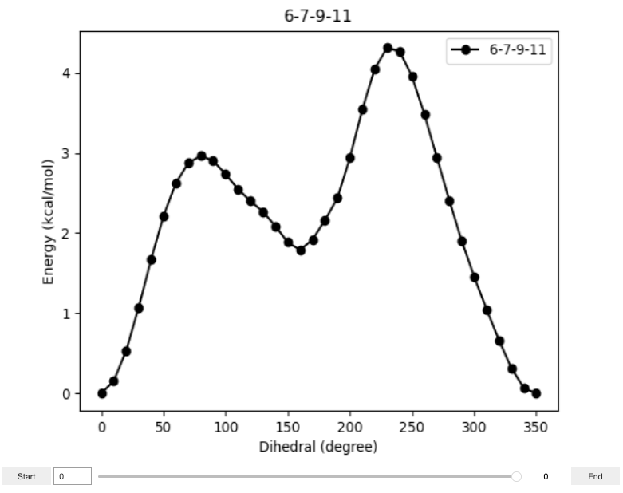Step 11: We will now extract the structures from torsional scan calculations and reoptimize them with torsion constraints and QM. The goal here is to improve the accuracy of the paths that we obtained from torsional scans. Cell 11.1 prepares the input files for constrained optimization calculations and Cell 11.2 executes the calculations. When Cell 11.2 is completed, run Cell 11.3 to extract the optimized geometries and energy profiles from calculation outputs. The extracted energy profiles can be visualized by running Cell 11.4.
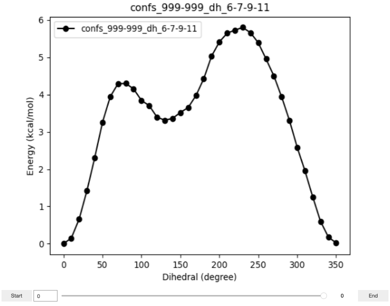Step 12: We now recompute the torsion energy profiles using GAFF. Here we simply take the molecular structures corresponding to each point in QM torsion profiles and optimize them using standard GAFF. The idea is to find out how good the torsion parameters are. Run Cell 12.1 to run constrained optimization calculations. Use buttons to submit calculations or check job progress. When the calculations are done, run Cell 12.2 to plot energy profiles.
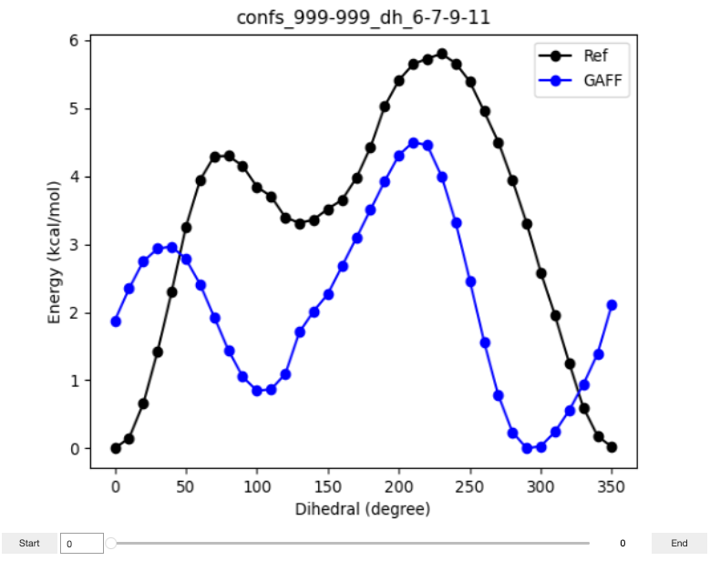Step 13: In this step, we fit the torsion parameters using a gradient based optimizer from Scipy. This is a 3 step procedure. The first, Cell 13.1 is used to set the initial guess for the optimization and generate input files. The second, Cell 13.2 can be used to submit, check and kill the optimization job. The third, Cell 13.3 can be used to visualize the energy profiles. Run Cell 13.1. In the resulting input panel, you will find a dropdown menu (Torsion:) which can be used to select which torsion you want to optimize. Upon the selection, more controls will appear. These include a set of text boxes for a series of torsions stemming from the central double bond of the torsion you just selected. By entering numerical values into the text boxes, you can provide the initial guess for the optimization. Note that the default values loaded are from GAFF2 forcefield. You will also find a set of check boxes that you can use to indicate which parameters to optimize. By default, barrier height, scee and scnb parameters are selected. Use range selectors to set bounds for each parameter. Note that the bounds must cover the value space you entered into the parameter text boxes. The “Set value from step:” dropdown menu can be used to load parameters from an existing step for the initial guess. Once you have set your parameters, hit the “Save Data” button. Next, run Cell 13.2. Hit submit to start running your jobs. Use other two buttons to check or kill the job. Once the job is running, you can plot the energy profiles during each step of the optimization by running Cell 13.3. Monitor the progress of optimization using these plots. Note that the plot title ends with a number, which is the optimization step. If you want to restart the optimization from a particular step, you can easily do so by selecting the corresponding step from “Set value from step:” dropdown menu in Cell 13.1 and resubmitting the job using Cell 13.2.

The images below show the progress (steps 15 and 211) of the paramter optimization in our example. Note that it’s not necessary to wait for the job to complete; if a satisfactory fit is achieved or if the optimization oscillates without converging, you can stop the job and proceed to the next step.
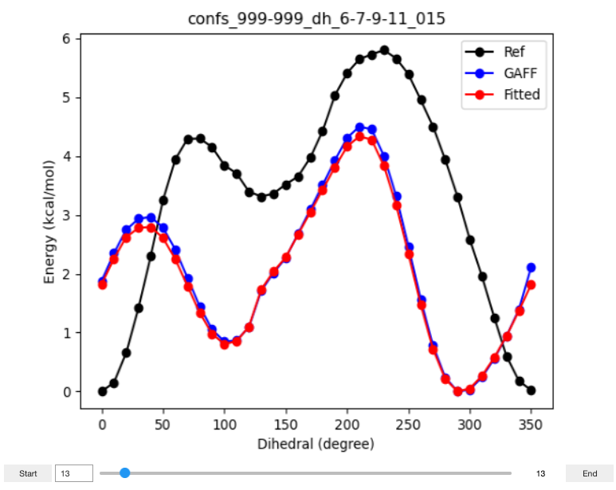 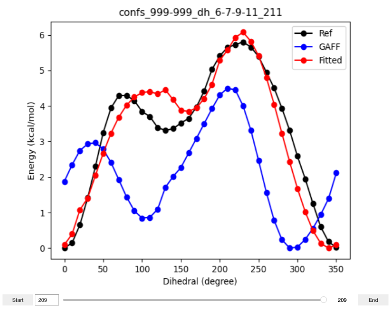Step 14: Once you have reparameterized all the torsions of interest, you can generate a parmed input file using the next step. Run Cell 14. First, for each torsion, select parameters from a certain optimization step. You can revisit Step 13.3, find the best plot and select the corresponding step from Select Step dropdown menu. Then hit the Save Data button. Once you have saved parameter sets for all your torsions, hit the Write Parmed Input button. You can use the resulting input file (update_params.in) to modify the torsion parameters in a given topology file (prmtop) using parmed -p prmtop -i update_params.in command. The new topology file will be saved as new.prmtop following this execution. The following image shows the output of Cell 14 in our test project.
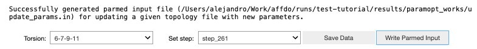This concludes the torsion reparameterization process.
Last updated on 01/31/2024.